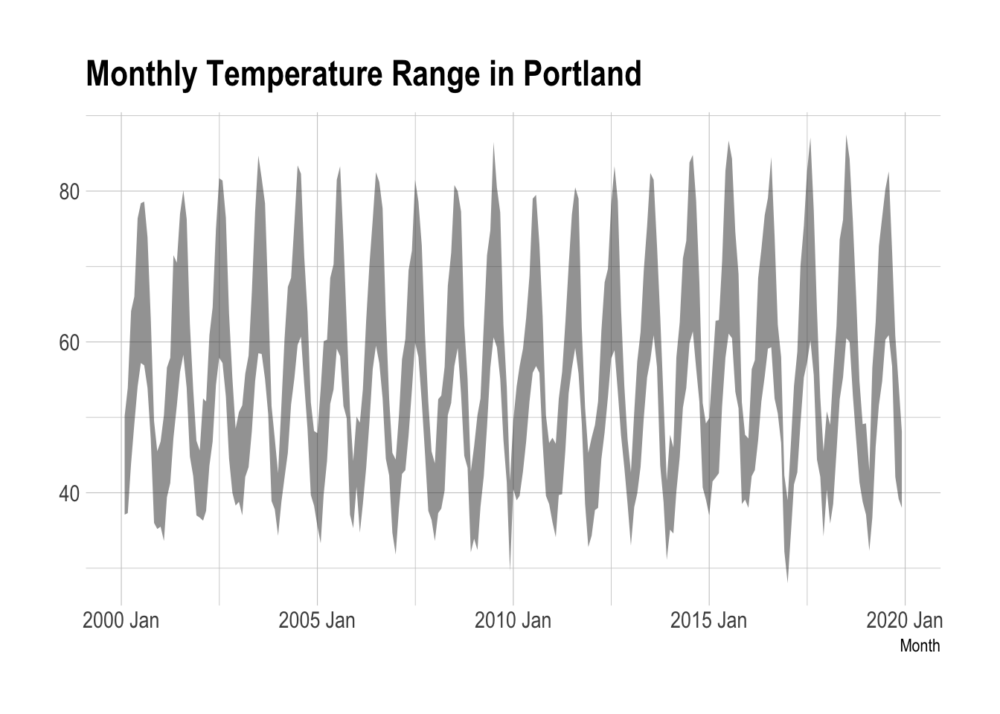

The ability to pivot data from long to wide format or from wide to long format is one of the greatest time saving devices that I know of. Let’s first look at the data types: wide and long.
Wide Data
I will use climate data covering the city of Portland from the National Weather Service. [The data were obtained from:] (https://w2.weather.gov/climate/local_data.php?wfo=pqr) and you will notice that there are data for Astoria, Salem and Eugene, also. Notice this is the Local Data and Records tab.
ScreenShot
I downloaded the Portland data and examined the spreadsheet. It has a rather straightforward wide structure – it has data in the column names. Other common examples are accounting data with the variables listed as rows and the time periods as the columns.
NWS Spreadsheet
There are a few rows describing the data that will have to be eliminated to import the data; that’s the skip flag so I will use skip=6. If we examine row 7, we will see what will become the variable names. YR and MO are year and month, respectively, there is then a blank and the remaining names are the day; it extends to 31. For each month, there are four rows representing the high TX, the low TN, precipitation PR, and snow SN. Scrolling rightward, we see the remainder of the spreadsheet from the image above; there is also an AVG or Total column.
NWS Spreadsheet
Were I to import them as is, let’s see what happens just skipping the first six rows. I will use the gt package to show what I have.
That is a pretty good start. There are a few types of missing data (the M values) and some conversions to consider before I can start. There are some - for days that do not exist. T stands for Trace amount, the lowest recorded numeric values are 0.01 inches. There are also values labelled as T/A which I assume to be Trace/Accumulation because there is no obvious dictionary describing their exact meanings.
Let’s start by reflecting a skip of the first six rows and two sets of missing values, M and -. I also want to rename the column that has no name in the original spreadsheet to be Variable because this is that column reflecting which of the four actual variables that we have for the month-year combination.
The T values still exist and but this will be enough to avail us of easy access to some monthly data for a first pivot example after eliminating one additional problem. The data end in December 2019.
From here I should be able to build some monthly data.
Monthly Data.
I want to pick out four columns from which to build dates for the data; let’s work on a monthly time series. Because the sum or average is already a column, I do not need to create it. I only need select it.
# Now to create a Monthly time series.NWS.Monthly.Base <- NWS %>%select(YR, MO, Variable, AVG.or.Total)
I will use a pipe from the magrittr package to reduce typing. %<>% substitutes for a combination of <- and %>% to update the object that I am operating on. I have some character values in that column and the original picture of the wide end of the data shows a missing average/total for October 1940; the T values are replaced by 0.005.
library(magrittr)NWS.Monthly.Base %<>%filter(!(MO==10& YR==1940)) %>%mutate(AVG.or.Total =recode(AVG.or.Total, T ="0.005"))
From there, I will use pivot_wider to move Variable to columns and their names and taking the values of each from the average/total column. How does it look?
That’s exactly what I need. To treat it as a functional time series, let me deploy the fpp3 package, tsibble requires the specification of a time index and these are monthly data but they are tidy, rows represent the units [periods of time] and the columns are variables. This is a time series because one of them is time.
To see the fluctuation in high and low temperatures from 2000 to 2019, we can show it.
library(hrbrthemes)NWS.Monthly.TS %>%filter(Month.Yr >as.Date("2000-01-01")) %>%ggplot() +aes(x=YM) +geom_ribbon(aes(ymin=Low, ymax=High), alpha=0.5) +theme_ipsum() +labs(title="Monthly Temperature Range in Portland",x="Month")

Because it is enabled, what does the STL decomposition suggest for temperature change; let’s look at the high temperatures.
NWS.Monthly.TS %>%model(STL(High ~season(period="1 year") +trend(window=30, degree=0))) %>%components() %>%autoplot()
A Summary of the Monthly Data
The key feature is spreading out the row for each initial variable in the pivot command and then clearing out the messy values. To turn it into a monthly time series, fpp3 has the yearmonth data structure.
Daily Data
Let me start with the original data and a single column omission, I want to get rid of the monthly total/average column and start some daily data.
We can pivot this with the new name variable to be called Day and the value of the four rows to value. I also want to extract the number at the end of the Day.
Now I want to partially pivot the data back to wider formats. In this case, the names of the new columns need to represent the four variables with the values coming from value. Let’s try it out.
There is a remaining problem. There are dates that can be constructed that do not actually exist, February 29, etc. because the spreadsheet had to have 31 columns for days that could exist. This is easy enough to clean up by dropping the missing dates.
date High Low Precipitation
Min. :1940-10-01 Min. : 14.00 Min. :-3.00 Min. :0.0000
1st Qu.:1960-07-24 1st Qu.: 52.00 1st Qu.:38.00 1st Qu.:0.0000
Median :1980-05-16 Median : 61.00 Median :45.00 Median :0.0050
Mean :1980-05-16 Mean : 62.62 Mean :44.99 Mean :0.1017
3rd Qu.:2000-03-08 3rd Qu.: 73.00 3rd Qu.:53.00 3rd Qu.:0.1000
Max. :2019-12-31 Max. :107.00 Max. :74.00 Max. :2.6900
NA's :12 NA's :12 NA's :12
Snow
Min. : 0.00000
1st Qu.: 0.00000
Median : 0.00000
Mean : 0.01655
3rd Qu.: 0.00000
Max. :14.40000
NA's :12
There are still 12 missing days. Those are right at the beginning. Let’s drop those.
date High Low Precipitation
Min. :1940-10-13 Min. : 14.00 Min. :-3.00 Min. :0.0000
1st Qu.:1960-08-02 1st Qu.: 52.00 1st Qu.:38.00 1st Qu.:0.0000
Median :1980-05-22 Median : 61.00 Median :45.00 Median :0.0050
Mean :1980-05-22 Mean : 62.62 Mean :44.99 Mean :0.1017
3rd Qu.:2000-03-11 3rd Qu.: 73.00 3rd Qu.:53.00 3rd Qu.:0.1000
Max. :2019-12-31 Max. :107.00 Max. :74.00 Max. :2.6900
Snow
Min. : 0.00000
1st Qu.: 0.00000
Median : 0.00000
Mean : 0.01655
3rd Qu.: 0.00000
Max. :14.40000
This can be turned into a tsibble to make sure the dates are proper.